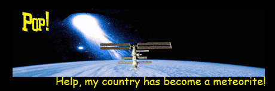
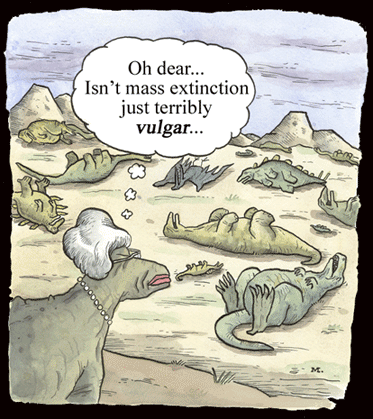
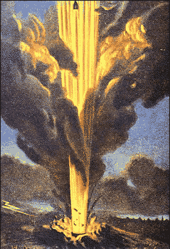
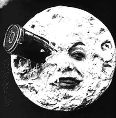
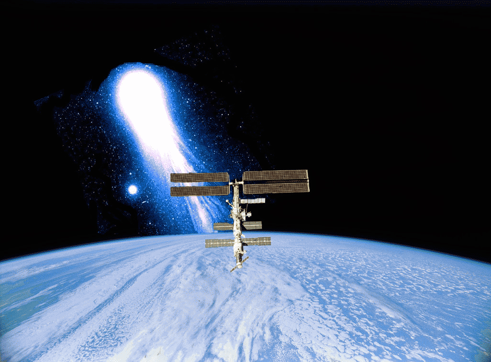

If you think you’ve seen it all, just picture this: your entire country, launched into space. Sounds weird, right? Still, it could happen any day, scientists say. In fact: the country-launching thing may be responsible for the death of the dinosaurs, 65 million years ago.
And that’s not all. If Verneshots are for real, the dreaded phenomenon
should happen again one day. Or, who knows, tomorrow.
That doomsday will begin like
just any other. But then, suddenly, you’ll hear a big, rumbling noise --
that deep, roaring, earthquake kind of sound. And then, there’s a MASSIVE
explosion. It will be a disaster unlike anything ever witnessed by mankind.
The earth literally caves in underneath your feet.
Next thing you know, you find yourself falling into this colossal, gaping
hole, many kilometers deep and hundreds of kilometers wide. You, your house,
yes: your entire country is sucked in. Deep down below, you might just be able
to see the red hot flicker of the Earth’s restless bowels.
|  |
|
(Cartoon copyright
Exit Mundi/Matthias Giesen) |
And if that spoils your day -- just wait. For deep down underneath you, the gaping hole starts to collapse. Starting from below, the crater squeezes tight, like some ridiculously large gullet contracting. Traveling at the speed of sound, the squeezing comes straight at you.
And then, it’s: POP! You’re blasted out of the hole, like a piece of wet soap, catapulted out of someone's hand. And you’re not the only one that is launched. In fact, your entire country pops out, along with tonnes and tonnes and tonnes of rock and soil. The debris -- and you -- fly off into the stratosphere.
Let’s face it: by now, you’re probably dead. But for arguments sake, let’s say you’re not. Next thing you know, you find yourself hovering over the Earth, like some oddball DIY astronaut, sitting on a chunk of debris. You fly and fly, and then, just when you’re beginning to appreciate the view -- oh boy, going doooooooown!
The Earth’s gravity pulls you back in again. You impact on the other side of the planet, together with your entire country. Ka-boom!
And that’s the end of it. Or
not quite: the planet is a complete mess. Where your country once was, a huge
lake of lava, a ‘flood basalt’, blobs out of the ground. The
atmosphere is suffocated with soot and sulfur. The ozone layer is wiped
away.
And on the other side of the planet, things aren’t any
better. Where you and your meteor have impacted, a vast crater remains.
A massive shockwave travels across the globe, setting the atmosphere on fire.
And when the fires dim, the Earth’s climate is plunged into a numbing
nuclear winter, because of smoke blocking the sun. Obviously, humanity
never stood a chance against this double-whammy. Most likely, everything
bigger than an insect dies.
But are Verneshots for
real?
|  |  |
|
|
By now, you probably understand why the German geologists who described the disaster in 2004 named it ‘Verneshot’. Jules Verne was the writer who once dreamt up a cannon capable of shooting rockets to the moon. And a HUGE cannon, that’s exactly what the Verneshot is. Well, kind of.
But could it be true? Can we really end up on the other side of the planet? Surprise, surprise: that possibility is real. In fact, there’s tantalizing evidence that the Earth is struck by Verneshots at least four times before.
For starters, you should know that the prehistoric past of our planet shows a very weird pattern. Four times in a row, almost all life on Earth suddenly vanished. Just like that. And scientists just can’t seem to agree what did the killing. There’s evidence that four huge meteorites banged into our world. But there’s evidence that the soot from ‘supervolcanoes’ choked our world to death, too. (See table)
|
Event |
Meteor
evidence |
Supervolcano
evidence |
|---|---|---|
|
‘Frasnian-Fammian’
extinction, 364 million years ago. 60 Percent of all marine life
dies. |
The ‘space
element’ iridium and stressed (‘shocked’) quartz is found in the
ground. The Siljan impact crater in Sweden was formed around the same
time. |
In the
Ukraine, a major outpoor of lava forms the Pripyat-Dniepr-Donets
highlands. |
|
‘Perm-Triassic’
extinction, 251 million years ago. 96 Percent of all species
vanish. |
Shocked quartz
and rare carbon molecules called ‘fullerenes’ are found in China
and Australia. Also, in the seabed near Australia there is a hole that
looks like a meteor crater (the ‘Bedout’ high) |
In Siberia, a
major outflow of lava forms the Siberian Traps. |
|
‘Triassic-Jurassic’
extinction, 200 million years ago. 20 Percent of all species die. |
Iridium,
shocked quartz and a likely impact crater: at Manicougan, Canada. |
The Central
Atlantic Magmatic Province, off the coast of Sierra Leone, is formed. |
|
‘Cretaceous-Tertiary’
extinction, 65 million years ago. 60 Percent of all species,
including the dinosaurs, meet their maker. |
Well-defined
iridium layer, shocked quartz and fullerenes, and a famous impact
crater at Chicxulub, Mexico. |
In India,
massive volcanic activity creates the chain of mountains called the
Deccan Traps. |
|
|
||
Take the extinction of the dinosaurs, 65 million years ago. Obviously, around that time a huge chunk of rock smashed into what’s now Mexico -- you can still see the impact crater. But equally obvious, there was a massive volcanic eruption in India around that time, too. Now ask yourself: how big are the odds that these two events occur simultaneously? According to the Germans, the odds that volcanism and meteors coincided four times in a row are 1 to 3500.
So bring
in the Verneshot. Perhaps the volcanism caused the meteor impact! The
German research shows that it could be possible.
Basically, it all begins when deep under the ground, gas seeps up -- a fairly
common thing, in geology. But this time, the gas gets trapped underneath
what’s known as a ‘craton’: a solid, impenetrable, massive slab of
ancient earth crust.
Next to the craton, a HUGE supervolcano may erupt. But the craton itself is in
even bigger trouble. The gas has no place to go. More and more pressure builds
up. Until one day, the entire craton goes pop - much like the cork blown off
of a pressurized bottle of champagne. But this time your planet is the bottle.
And you, you’ll be the cork!
|  |
|
|
After the initial bang, you'll have this huge, gaping, vacuum hole in the Earth. Like all vacuum holes, the hole slams shut. From the bottom up, it implodes. A huge ball of debris is squeezed out. The debris catapults into space. And slams back into the planet elsewhere -- just like a real meteorite.
The German scientists hope to
find more evidence for their theory, by closely studying the soil underneath
India and Siberia -- sites where Verneshots must have gone off in the past.
Worryingly, they have found some evidence to support their case. In Siberia,
India and on the ocean floor near Sierra Leone, you can see these weird,
circular structures in the ground. They look a bit like, well... the barrels
of three huge, ancient cannons.
On the other hand, the Verneshot theory is still new, controversial stuff. For one thing, the theory doesn’t explain why there seems to be only one meteor impact crater near Mexico. A Verneshot would throw up more than one ‘comet’.
Perhaps it’s all the better we don’t know. For there's a little problem. At this very moment, pressure is slowly building up underneath the craton of Siberia once again. Could it be just some innocent display of nature? Or are those poor Russians about to get shot in the bum in a way that hasn’t been seen on Earth since the days of the dino’s?
 |
 |